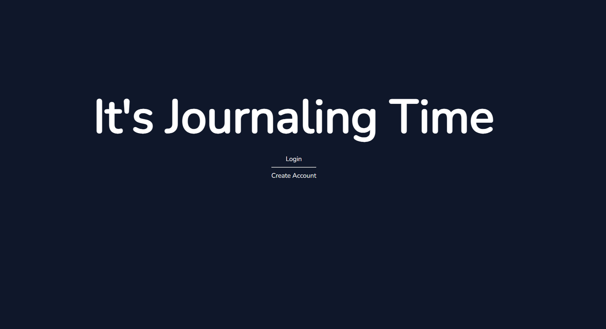
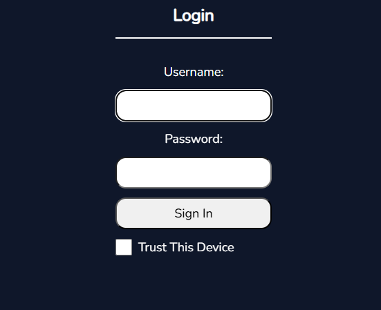

I have always been taught to be a hard worker and to do my best in everything I do. I have been a stay at home dad while going to school online at WGU and I have loved learning how to code and create software solutions. I want to solve problems and contribute to helping others reach their needs and goals. I can't wait to get started using what I have learned and keep learning on the job.
I wanted to learn more about backend development using node.js, so I decided to do a MERN stack project. This project has allowed me to learn how to develop a Rest API and frontend with React. I have finished the backend with a connection to a mongoDB database, and handling requests from the frontend with logs for the resquests and errors that happen. The project includes JWT authetication stored in https cookies. The frontend is still a work in progess, but when finished it will allow the user to record journal entries every day and log health related metrics.

